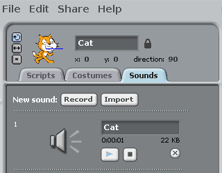
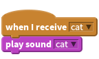
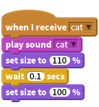

Activity Checklist
- Create a new sprite and make it resemble the sound you will be making.
- In the
soundstab, create a new recording or import a sound.
 When the sprite is clicked,
broadcastthe same name as your sprite.Now we need to play the
soundwhen it receives thebroadcast.
Finally, make the sprite change in appearance when the
sound.{blockpurple} is played.